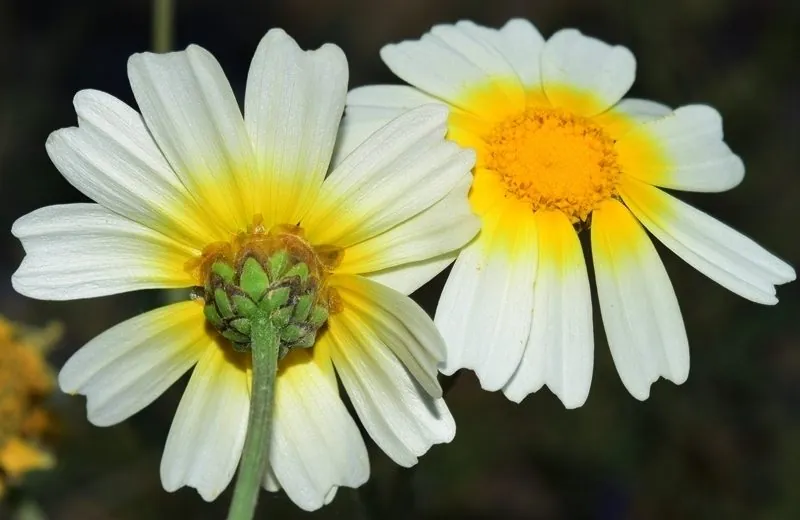

农作物与经济植物 · 植物界
茼蒿 Glebionis coronaria

茼蒿的茎叶柔嫩、有特殊清香，可炒食、凉拌和涮火锅，是秋冬季常见的绿叶蔬菜，生育期短、栽培容易。
- 分类
- 门被子植物门纲双子叶植物纲目菊目科菊科属茼蒿属
- 栖息环境
- 冷凉湿润的菜地，不耐高温，喜保水力强土壤
- 地理分布
- 原产地中海沿岸，现中国各地广泛栽培
- 保护级别
- 暂无评估（栽培作物）
物种志
茼蒿是一年生或二年生草本，株高 0.2–0.5 m。茎直立，肉质。叶片互生，羽状深裂，裂片狭长，肉质柔嫩，有特殊的清香气味。花为头状花序，黄色或白色，但栽培上以采嫩茎叶为主，抽薹开花后品质下降。
茼蒿原产地中海沿岸，中国栽培历史悠久，是秋冬季的常见蔬菜。它喜冷凉湿润、光照充足，不耐高温，适宜在疏松肥沃、保水力强的土壤中种植，生育期短，可分批播种。嫩茎叶可炒食、凉拌、涮火锅、做汤，有独特的清香，口感柔嫩。茼蒿富含维生素、胡萝卜素和膳食纤维，是低热量蔬菜。栽培时注意保持土壤湿润，避免高温抽薹。
形态与习性
- 株高0.2–0.5 m
- 叶羽状深裂，肉质柔嫩
- 花头状花序，黄或白色
- 生育期短，可分批播种
- 用途炒食、凉拌、涮火锅
趣味知识
- 茼蒿有特殊的清香气味，是火锅中常见的绿叶菜。
- 茼蒿生育期短，播种后一个多月就能采收。
- 高温下茼蒿容易抽薹，茎叶会变老、品质下降。